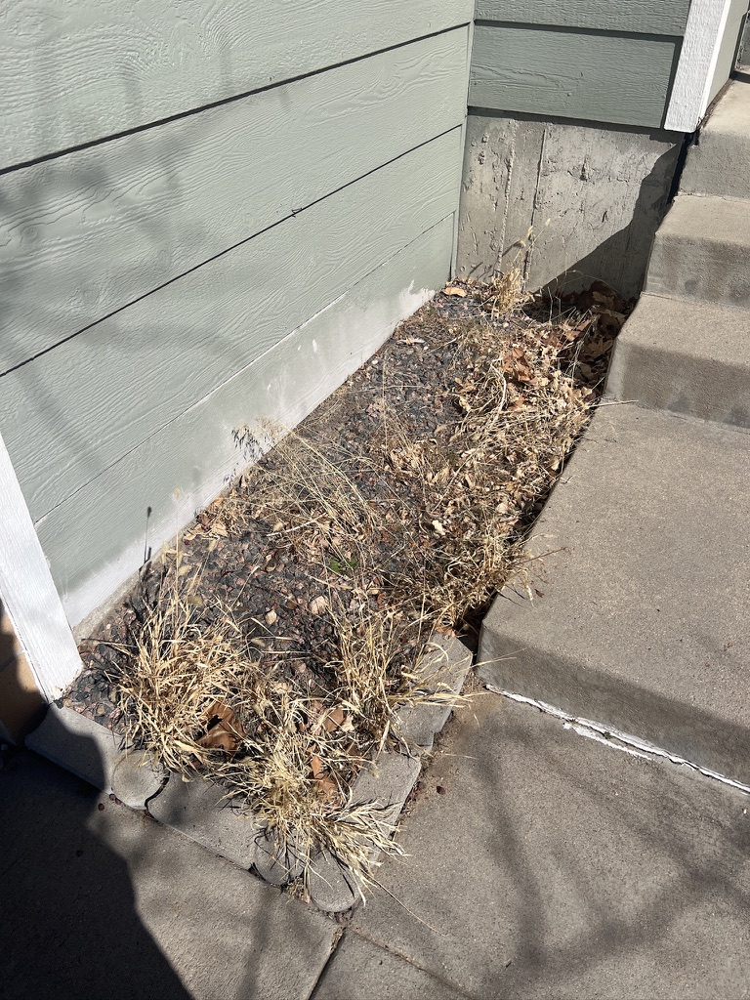

Narrow bed tucked into the house wall corner. Green siding forms an L-shape — running along the left wall (long edge) and across the top. Exposed concrete visible below the siding at top. Stairs at the upper-right, sidewalk and walkway along the right and bottom. Currently filled with dead weeds, old gravel, and leaf debris — a blank canvas for native planting.
Colorado's Front Range is home to over 1,000 native bee species (nearly 30% of all North American bees), 250+ butterfly species, and 1,000+ moth species. But most of these insects are specialists — they need specific native plants they've co-evolved with over thousands of years. A non-native ornamental garden might look nice, but it's ecologically empty.
Research from CSU and the Xerces Society shows that native cultivars produce 30–50% fewer flowers than true native species, and attract significantly fewer pollinators. Even in a space this small, planting true Colorado natives instead of ornamentals can support dozens of bee species, multiple butterfly species, and beneficial predatory insects.
This design treats your 6.75 square feet as a micro-ecosystem — not just a garden bed. Every plant was chosen for its ecological relationships, not just its looks (though it'll look great too).
Inspired by the Highlands Ranch water-savings xeriscape approach — boulders, native grasses, and drought-adapted natives — but scaled down to a foundation pocket. The design uses three vertical layers (ground, mid, upper) and four types of ground surface (bark mulch, native stone, bare sandy soil, living groundcover) to create maximum habitat diversity in minimum space.
Critical habitat feature: bare soil patches are intentionally left between plants. 70% of Colorado's native bees are ground-nesters — they need exposed, sandy soil to build their nests. Most landscaping smothers this habitat under thick mulch or rock.
Wall-side strip — holds moisture, suppresses weeds near house wall
1–2 accent rocks — shelter for ground beetles, spiders, beneficial insects
Small patches — critical nesting habitat for 700+ ground-nesting bee species
Walkway edge — Pussytoes mat softens pavers, hosts small native bees
Top-down view. Narrow bed (~18" deep × ~54" long) in a house wall corner. House wall (green siding) forms an L along the left (long edge) and top. Exposed concrete visible at top below the siding. Right side: stairs (top third), then sidewalk, then walkway. Bottom: concrete walkway. Pavers line the bottom and lower-right edges.
Key design choice: The bare sandy soil patches between plants aren't a mistake — they're intentional habitat for the 700+ species of ground-nesting native bees in Colorado. Most landscaping inadvertently destroys this critical habitat with thick mulch layers. Keep mulch under 2" deep and leave these pockets exposed.
Every plant is native to the Colorado Front Range and chosen for its ecological relationships — not just appearance. True species (not cultivars) are preferred, as research shows cultivars produce 30–50% fewer flowers and attract significantly fewer pollinators.
This combination provides continuous food sources from April through October and winter bird forage — no gap in the ecological chain.
Here's a snapshot of the ecological web this 6.75 sq ft bed can support:
Butterfly Milkweed is the larval host — caterpillars literally cannot survive without it. Pussytoes hosts American Lady butterflies. Blanket Flower and Penstemon provide adult nectar.
Lead Plant and Blanket Flower have open/accessible flower shapes serving generalist bees. Bare soil patches provide nesting sites for the 70% of Colorado bees that nest underground.
Pineleaf Penstemon's tubular red flowers are evolved specifically for hummingbird pollination. Butterfly Milkweed also attracts them. Both bloom through peak hummingbird season (Jun–Aug).
Blanket Flower and Lead Plant seed heads attract goldfinches, sparrows, and juncos through fall and winter. Leave seed heads standing — don't deadhead in fall.
The native accent rock provides daytime shelter for ground beetles, spiders, and predatory wasps that control pest populations. Yarrow-like foliage on Pussytoes shelters tiny predators.
Penstemon and Milkweed attract sphinx/hawk moths at dusk. These are important but often-overlooked pollinators — Colorado has 100+ species.
| Item | Details | Est. Cost |
|---|---|---|
| Dwarf Lead Plant native plant | 1 × 1-gallon pot (native nursery) | $12–18 |
| Butterfly Milkweed native plant | 1 × 1-gallon pot (true species, not cultivar) | $10–15 |
| Pineleaf Penstemon native plant | 1 × 1-gallon pot | $10–14 |
| Blanket Flower native plant | 1 × 1-gallon pot (true species G. aristata) | $8–12 |
| Pussytoes native groundcover | 3 × 4" pots (or 1 flat of plugs) | $10–18 |
| Native Colorado stone hardscape | 1–2 pieces, 6–10" (local landscape supply) | $5–15 |
| Cedar bark mulch ground cover | Small bag — back strip only, thin layer | $5–8 |
| Coarse sand bee habitat | Small bag — for bare soil patches | $4–6 |
| Soil amendment prep | Small bag compost + perlite | $6–10 |
| Estimated Total | $70–$116 | |
For true native species (not cultivars), look for: Harlequin's Gardens (Boulder), Chatfield Farms native plant sale (Denver Botanic Gardens, May), Colorado Native Plant Society sales (conps.org), or Resource Central's Garden In A Box kits (resourcecentral.org). Avoid big-box store "native" plants — they're often cultivars treated with neonicotinoid pesticides that harm the very pollinators you're trying to support. Ask nurseries specifically for pesticide-free stock.
Remaining budget (~$85–130): Consider adding a small native bee house ($15–20), a flat sandstone stepping stone for access ($10–15), or a solar spotlight to highlight the bed at night ($15–20). Or save it for a second native planting pocket elsewhere in the yard.
Pull all dead weeds and old gravel out to bare soil. Remove any landscape fabric — you won't use it in this design (it blocks ground-nesting bees). Takes about 30 minutes with a hand trowel.
Native plants generally prefer lean soil, so don't over-amend. Mix in just a little compost and perlite to the top 6". For the two bare soil patches, mix coarse sand into the top 3" to create the sandy, well-drained texture ground-nesting bees prefer.
Position your 1–2 native accent rocks in the middle zone. Partially bury them so they look natural (about 1/3 buried). Spaces between and under the rock edges will become insect shelter.
Start with Dwarf Lead Plant (wall side, upper end, 4" from wall) and Butterfly Milkweed (wall side, lower end). Then Pineleaf Penstemon (middle zone, upper) and Blanket Flower (middle zone, lower). Finish with Pussytoes plugs along the walkway edge, spaced ~8" apart. Water everything deeply.
Spread a thin layer (1–2" max) of cedar bark mulch in the wall-side strip around the Lead Plant and Milkweed only. Leave the middle zone with exposed sandy soil patches between the rock and plants. Leave the walkway-side zone for Pussytoes to spread into naturally.
Deep water 2–3 times/week for 3–4 weeks. Note: Butterfly Milkweed is slow to emerge in spring (often late May) — don't panic if it looks dead. After establishment, these natives need almost no supplemental water. Total install time: ~2–3 hours.
Spring (March–April): Resist the urge to clean up! Leave last year's dead stems until temperatures are consistently above 50°F — overwintering beneficial insects are still sheltering inside. Then cut back dead growth. Butterfly Milkweed won't emerge until late May — mark it so you don't accidentally plant over it.
Summer (May–September): Almost nothing. Enjoy watching the pollinators. Deadhead Blanket Flower if you want continuous blooms, OR leave some spent heads for goldfinches — your call. No pesticides, ever.
Fall (October–November): Leave everything standing. Seed heads feed birds. Hollow stems shelter overwintering insects. The Pussytoes stays evergreen. This is when the bed earns its ecological keep.
Watering: After year one, these natives are extremely drought-adapted. Occasional deep watering during extended dry spells only. The Milkweed and Lead Plant have deep taproots that access moisture other plants can't reach.
No pesticides. Period. Even "organic" insecticides kill beneficial insects. Neonicotinoid-treated plants (common at big-box stores) are toxic to pollinators for years. Buy from native plant nurseries that guarantee pesticide-free stock. If you see aphids on the milkweed — that's food for ladybugs and lacewings. The ecosystem will self-regulate.
Resource Central — Top 10 Drought-Tolerant Plants for Colorado
CSU Extension — Top 20 Drought-Tolerant Perennial Flowers for Colorado
Xerces Society — Pollinator-Friendly Plant Lists
Colorado DNR — Native Pollinating Insects Health Study
Resource Central — Garden In A Box Program
Nick's Garden Center — Low-Maintenance Plants for Front Range